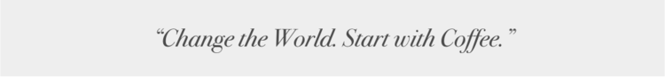
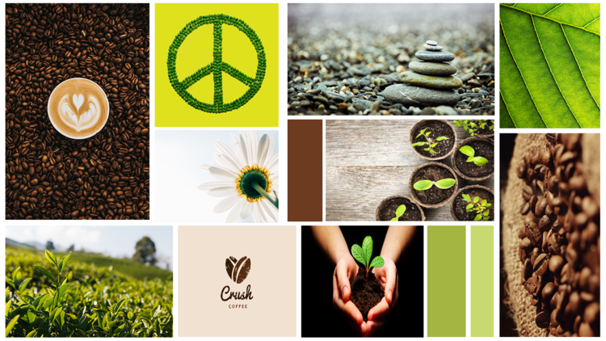
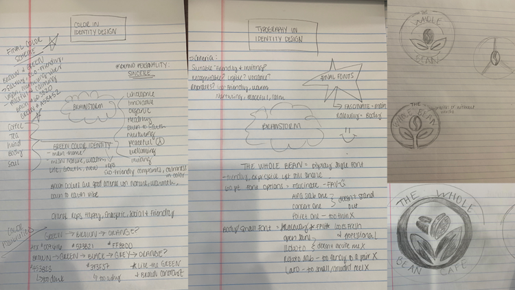
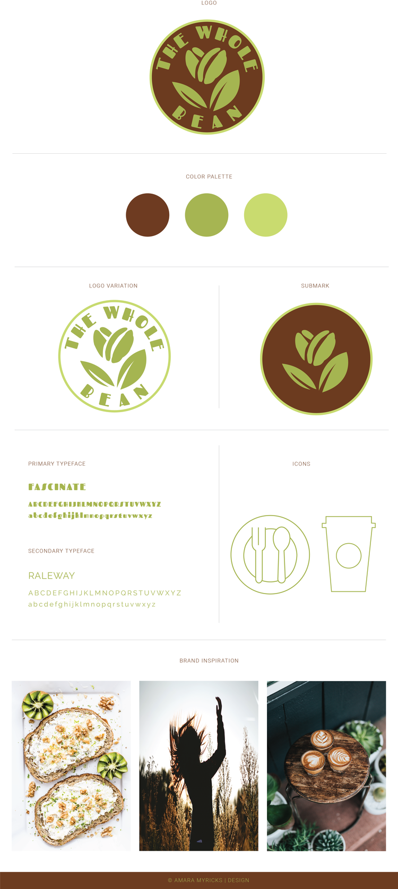
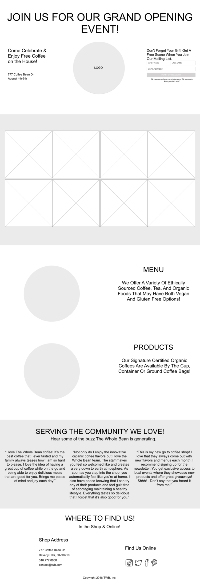
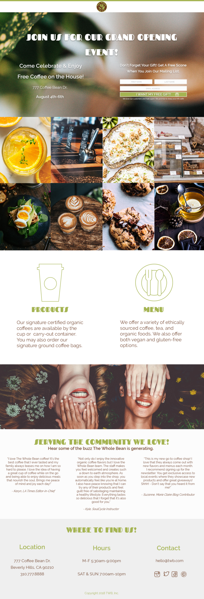

THE WHOLE BEAN | BRANDING & IDENTITY / LANDING PAGE CONCEPT
OBJECTIVE
To develop The Whole Bean coffee shop’s entire corporate brand identity & to create a set of design deliverables for the company’s grand opening launch.

The Problem
The Whole Bean coffee shop needed help developing their entire corporate brand & identity for their grand opening launch. My role was to design & develop the entire company brand identity to fit their new product line of drip coffee & espresso drinks, loose leaf teas, vegan and gluten-free baked goods, foods, and sandwiches. They wanted to ensure that their brand would resonate within their new popular neighborhood location.
The Solution
- Build a complete brand identity package that resonates with The Whole Bean brand and its audience. This includes: a color scheme, typescale, brand images, a company logo, icons, a social media header, and a brand style guide.
- Create a landing page that allows The Whole Bean users to easily access information about the grand opening and sign up for their newsletter. This CTA (call-to-action) provides more opportunities for customer relationship engagement and a stronger brand identity.
Design Planning and Research
After defining the problem & identifying the solution, I began researching the company’s brand, products & target audience. I discovered that The Whole Bean brand personality is sincere and caters to a wide audience that ranges from families, friends, fitness gurus, & influencers with a common goal to eat healthy and live well for their spirit, body, and soul. I began developing the look & feel for the brand by creating the company logo.
Inspirational Mood Board

Rough Sketches

Brand Elements Guide (full pdf)

Lo-Fidelity Wireframes / Task Flows

Hi-Fidelity Mockups
After brainstorming, sketching out ideas and creating rough wireframe task flows, I’m ready to start working on the hi-fidelity mockup based on items and feedback gathered in the planning phase. Below is the final outcome of the landing page based on all necessary changes made.
